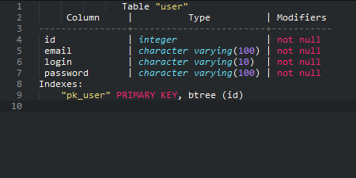
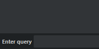
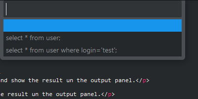

Features
Switching between connections ctrl+alt+e
Show a quick pane containting all configured connections.
Press Enter to select current connection.

Desc table ctrl+e ctrl+d
Show an quick pane containing all tables from the current database.
Press Enter on a table for displaying his desc in the output panel.

Quick show table records ctrl+e ctrl+s
Show an quick pane containing all tables from the current database.
Press Enter on a table for displaying his 100 first records in the output panel.
Execute queries
ctrl+e ctrl+q
Prompt for a query, executes it, and show the result un the output panel.

ctrl+e ctrl+e
Execute selected query and show the result un the output panel.
History ctrl+e ctrl+h
Show an quick pane containing the history of queries
Press Enter on a query replay it.

Installation
With Package Control
Look for the package named SQLExec.
With Git
Download the Zip file, extract it to your Sublime Text packages directory, and rename it to SQLExec.
Requirements
Some directories have to be defined in the PATH environment variable, according to the SGBD that you want to use: "mysql" executable for MySQL, "pgsql" executable for PostgreSQL, "vsql" executable for Vertica, or "sqlplus" executable for Oracle ( Not tested ).
You can also specify full path for these command in settings :
( Preferences > Package Settings > SQLExec > Settings - User )
"sql_exec.commands": {
"mysql" : "/usr/bin/mysql"
},